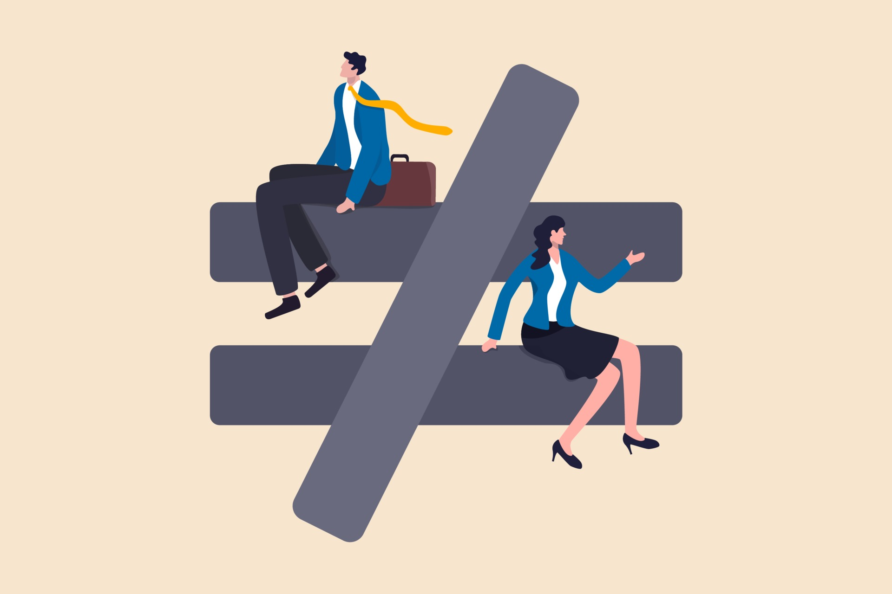
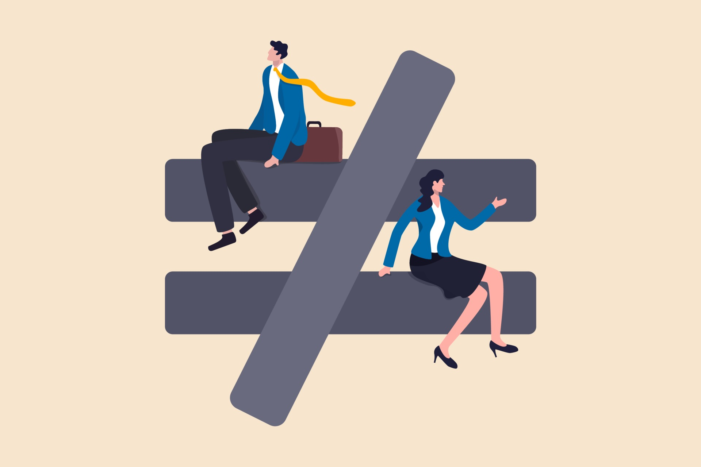

Group 5
Welcome to our website! Check out our old Webpage
Members: Franchesca Kiss, John Chris, Angel Gavrielle, Aaron Euwan
 

Welcome to our website! Check out our old Webpage
Members: Franchesca Kiss, John Chris, Angel Gavrielle, Aaron Euwan